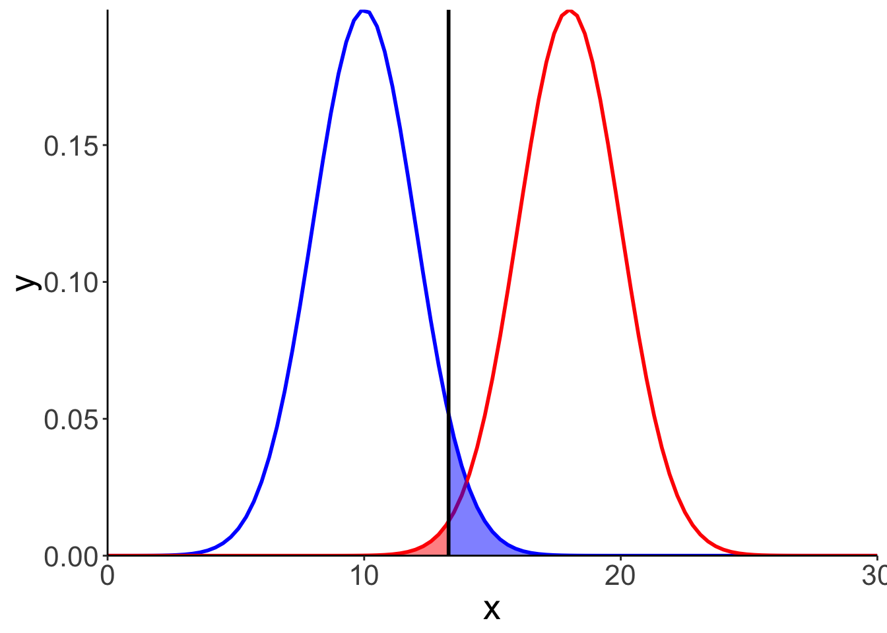
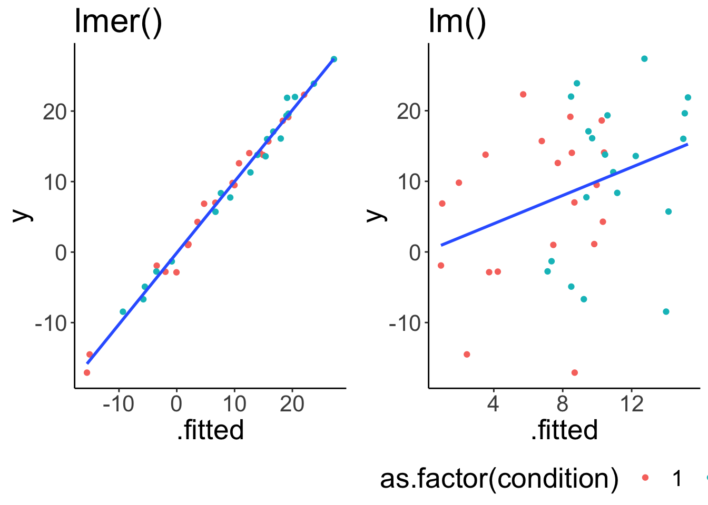

Chapter 5 The linear model
5.1 Resources
5.2 Todo
- create an example to contrast random intercept and slopes
5.3 Comparison of two independent samples
set.seed(0)
df.data = data_frame(
condition = rep(c("1","2"), each = 40),
rating = c(rnorm(40, mean = 8, sd = 2),
rnorm(40, mean = 7, sd = 2))
)
ggplot(data = df.data, aes(x = condition, y = rating))+
stat_summary(fun.y = mean, geom = 'bar', color = 'black')+
stat_summary(fun.data = mean_cl_boot, geom = 'linerange', size = 1)+
geom_point(position = position_jitter(height = 0, width = 0.1))
t.test(df.data$rating[df.data$condition == "1"],
df.data$rating[df.data$condition == "2"]
)
#>
#> Welch Two Sample t-test
#>
#> data: df.data$rating[df.data$condition == "1"] and df.data$rating[df.data$condition == "2"]
#> t = 3.426, df = 77.723, p-value = 0.0009816
#> alternative hypothesis: true difference in means is not equal to 0
#> 95 percent confidence interval:
#> 0.5777533 2.1809087
#> sample estimates:
#> mean of x mean of y
#> 8.109871 6.730540
tmp = lm(rating~condition, data = df.data)
tmp %>% summary()
#>
#> Call:
#> lm(formula = rating ~ condition, data = df.data)
#>
#> Residuals:
#> Min 1Q Median 3Q Max
#> -4.1783 -1.3310 0.0074 0.9905 5.1522
#>
#> Coefficients:
#> Estimate Std. Error t value Pr(>|t|)
#> (Intercept) 8.1099 0.2847 28.487 < 2e-16 ***
#> condition2 -1.3793 0.4026 -3.426 0.00098 ***
#> ---
#> Signif. codes: 0 '***' 0.001 '**' 0.01 '*' 0.05 '.' 0.1 ' ' 1
#>
#> Residual standard error: 1.801 on 78 degrees of freedom
#> Multiple R-squared: 0.1308, Adjusted R-squared: 0.1197
#> F-statistic: 11.74 on 1 and 78 DF, p-value: 0.00098015.4 One continuous and one discrete predictor
set.seed(2)
df.data = data_frame(
participant = rep(1:20,2),
individual = rep(rnorm(20, mean = 0, sd = 10), 2), #explore for different values of SD
condition = rep(c(1, 2), each = 20),
fixed.mean = ifelse(test = condition == 1, yes = 3, no = 10),
x = runif(40, -10, 10),
y = x + rnorm(40, mean = fixed.mean, sd = 1) + rnorm(40, mean = individual, sd = 1)
) %>%
mutate(condition = as.factor(condition))
fit.lm = lm(y ~ condition + x, data = df.data)
fit.lmer = lmer(y ~ x + condition + (1 | participant), data = df.data)
# fit.lmer = lmer(y ~ x + condition + (1 | participant), data = df.data)
#calculate confidence intervals
fit.lm %>% confint()
#> 2.5 % 97.5 %
#> (Intercept) 0.82554482 10.547238
#> condition2 -1.07618646 12.773881
#> x -0.07658541 1.040574
fit.lmer %>% confint()
#> Computing profile confidence intervals ...
#> 2.5 % 97.5 %
#> .sig01 7.84581546 14.820617
#> .sigma 1.23425021 2.313729
#> (Intercept) -0.09671975 9.642079
#> x 0.85629769 1.137888
#> condition2 6.20060775 8.480944
#summaries
fit.lmer %>% summary()
#> Linear mixed model fit by REML ['lmerMod']
#> Formula: y ~ x + condition + (1 | participant)
#> Data: df.data
#>
#> REML criterion at convergence: 240.5
#>
#> Scaled residuals:
#> Min 1Q Median 3Q Max
#> -1.63170 -0.52521 0.09669 0.36860 1.62008
#>
#> Random effects:
#> Groups Name Variance Std.Dev.
#> participant (Intercept) 115.00 10.724
#> Residual 2.97 1.723
#> Number of obs: 40, groups: participant, 20
#>
#> Fixed effects:
#> Estimate Std. Error t value
#> (Intercept) 4.7790 2.4319 1.965
#> x 0.9995 0.0717 13.941
#> condition2 7.3481 0.5832 12.599
#>
#> Correlation of Fixed Effects:
#> (Intr) x
#> x -0.052
#> condition2 -0.123 0.356
fit.lm %>% summary()
#>
#> Call:
#> lm(formula = y ~ condition + x, data = df.data)
#>
#> Residuals:
#> Min 1Q Median 3Q Max
#> -25.785 -6.702 1.187 7.649 16.608
#>
#> Coefficients:
#> Estimate Std. Error t value Pr(>|t|)
#> (Intercept) 5.6864 2.3990 2.370 0.0231 *
#> condition2 5.8488 3.4178 1.711 0.0954 .
#> x 0.4820 0.2757 1.748 0.0887 .
#> ---
#> Signif. codes: 0 '***' 0.001 '**' 0.01 '*' 0.05 '.' 0.1 ' ' 1
#>
#> Residual standard error: 10.51 on 37 degrees of freedom
#> Multiple R-squared: 0.1159, Adjusted R-squared: 0.06815
#> F-statistic: 2.426 on 2 and 37 DF, p-value: 0.1023
#fitted with lmer()
p1 = ggplot(data = fit.lmer %>% augment, aes(x = .fitted, y = y))+
geom_point(aes(color = as.factor(condition)))+
geom_smooth(method = lm, se = F)+
labs(title = "lmer()")+
theme(legend.position = "none")
#fitted with lm()
p2 = ggplot(data = fit.lm %>% augment, aes(x = .fitted, y = y))+
geom_point(aes(color = as.factor(condition)))+
geom_smooth(method = lm, se = F)+
labs(title = "lm()")+
theme(legend.position = "bottom")
p1 + p2
#main effect of condition
ggplot(data = df.data, aes(x = condition, y = y))+
geom_point(aes(color = condition))+
geom_line(aes(group = participant), alpha = 0.1)
ggplot(data = df.data, aes(x = x, y = y, color = condition))+
geom_point()+
geom_smooth(method = lm, se = F)+
geom_line(aes(group = participant), alpha = 0.1)
#model comparison
set.seed(2)
df.data = data_frame(
participant = rep(1:20,2),
individual = rep(rnorm(20, mean = 0, sd = 10),2), #explore for different values of SD
condition = rep(c(1, 2), each = 20),
fixed.mean = ifelse(test = condition == 1, yes = 3, no = 10),
x = runif(40, -10, 10),
y = x + rnorm(40, mean = fixed.mean, sd = 1) + rnorm(40, mean = individual, sd = 1)
) %>%
mutate(condition = as.factor(condition))
# lmer
fit.lmer1 = lmer(y ~ x + condition + (1 | participant), data = df.data)
fit.lmer2 = lmer(y ~ x + (1 | participant), data = df.data)
# fit.lmer2 = lmer(y ~ x * condition + (1 | participant), data = df.data)
anova(fit.lmer1, fit.lmer2)
#> refitting model(s) with ML (instead of REML)
#> Data: df.data
#> Models:
#> fit.lmer2: y ~ x + (1 | participant)
#> fit.lmer1: y ~ x + condition + (1 | participant)
#> Df AIC BIC logLik deviance Chisq Chi Df Pr(>Chisq)
#> fit.lmer2 4 292.98 299.74 -142.49 284.98
#> fit.lmer1 5 251.17 259.62 -120.59 241.17 43.81 1 3.618e-11 ***
#> ---
#> Signif. codes: 0 '***' 0.001 '**' 0.01 '*' 0.05 '.' 0.1 ' ' 1
fit.lmer1 = lmer(y ~ x + condition + (1 | participant), data = df.data)
fit.lmer2 = lmer(y ~ condition + (1 | participant), data = df.data)
anova(fit.lmer1, fit.lmer2)
#> refitting model(s) with ML (instead of REML)
#> Data: df.data
#> Models:
#> fit.lmer2: y ~ condition + (1 | participant)
#> fit.lmer1: y ~ x + condition + (1 | participant)
#> Df AIC BIC logLik deviance Chisq Chi Df Pr(>Chisq)
#> fit.lmer2 4 295.65 302.41 -143.83 287.65
#> fit.lmer1 5 251.17 259.62 -120.59 241.17 46.483 1 9.24e-12 ***
#> ---
#> Signif. codes: 0 '***' 0.001 '**' 0.01 '*' 0.05 '.' 0.1 ' ' 1
# #lm
# fit.lm1 = lm(y ~ x + condition, data = df.data)
# fit.lm2 = lm(y ~ x , data = df.data)
# anova(fit.lm1, fit.lm2)
# alternative way using the car package
# library(car)
# Anova(fit.lmer1)5.5 Comparison of two dependent samples
set.seed(0)
df.dependent.wide = data_frame(
participant = 1:20,
type = sample(c(-2, 2), size = 20, replace = T),
cond_1 = rnorm(20, mean = 8, sd = 2) + rnorm(20, mean = type, sd = 2),
cond_2 = rnorm(20, mean = 7, sd = 2) + rnorm(20, mean = type, sd = 2)
)
# paired samples t-test
t.test(df.dependent.wide$cond_1, df.dependent.wide$cond_2, paired = T, alternative = "greater")
#>
#> Paired t-test
#>
#> data: df.dependent.wide$cond_1 and df.dependent.wide$cond_2
#> t = 1.293, df = 19, p-value = 0.1058
#> alternative hypothesis: true difference in means is greater than 0
#> 95 percent confidence interval:
#> -0.3105483 Inf
#> sample estimates:
#> mean of the differences
#> 0.9205917
# make a long data frame
df.dependent.long = df.dependent.wide %>%
gather("condition", "rating", contains("cond"))
# linear mixed effects model
tmp = lmer(rating ~ condition + (1 | participant), data = df.dependent.long) #different intercept for each participant
tmp %>% coef()
#> $participant
#> (Intercept) conditioncond_2
#> 1 9.557917 -0.9205917
#> 2 5.995045 -0.9205917
#> 3 6.944840 -0.9205917
#> 4 8.043706 -0.9205917
#> 5 9.684893 -0.9205917
#> 6 8.012448 -0.9205917
#> 7 10.235473 -0.9205917
#> 8 8.180912 -0.9205917
#> 9 8.265992 -0.9205917
#> 10 6.700969 -0.9205917
#> 11 7.446746 -0.9205917
#> 12 8.063365 -0.9205917
#> 13 6.547727 -0.9205917
#> 14 8.889926 -0.9205917
#> 15 5.425960 -0.9205917
#> 16 8.676699 -0.9205917
#> 17 6.310274 -0.9205917
#> 18 9.411736 -0.9205917
#> 19 9.693460 -0.9205917
#> 20 7.126533 -0.9205917
#>
#> attr(,"class")
#> [1] "coef.mer"
tmp2 = tmp %>% tidy
#> Warning in bind_rows_(x, .id): binding factor and character vector,
#> coercing into character vector
#> Warning in bind_rows_(x, .id): binding character and factor vector,
#> coercing into character vector
tmp2 = tmp %>% augment
df.plot = df.dependent.wide %>%
left_join(tmp %>%
augment() %>%
select(participant, coef = .fitted, .fixed),
by = "participant") %>%
gather("condition", "rating", contains("cond"))
df.model = tmp %>%
augment
ggplot(data = df.plot, aes(x = condition, y = rating, color = participant))+
geom_line(data = df.model, aes(y = .fitted, group = participant))+
geom_point()+
stat_summary(data = df.model,
fun.y = mean,
aes(x = condition, y = .fixed),
geom = "point",
shape = 21,
color = "black",
fill = "red",
size = 4)
print(sessionInfo(), locale = FALSE)